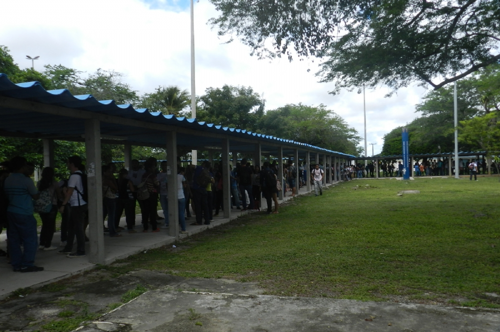

Estudante fura fila do resun e é pego na saída
Por: Luka Rubino
Um estudante da Universidade Federal de Sergipe (UFS) foi flagrado furando a fila do Restaurante Universitário (RESUN) na última terça-feira, causando revolta entre os demais alunos que aguardavam pacientemente sua vez de ser atendidos. O incidente, que ocorreu no horário de maior movimento do restaurante, serviu como um alerta sobre a falta de respeito em ambientes compartilhados.
O incidente ocorreu por volta das 12h30, quando centenas de estudantes se dirigem ao local para o almoço. Segundo testemunhas, o jovem tentou se infiltrar no meio da fila, alegando ter "esquecido algo" e precisar "só pegar rapidinho". No entanto, a tentativa foi rapidamente percebida pelos outros alunos, que reagiram com indignação e vaias. A situação quase se transformou em uma confusão generalizada.
A administração da UFS informou que está tomando medidas para coibir esse tipo de comportamento, incluindo a instalação de câmeras de segurança e a presença de monitores durante os horários de pico. Em nota, a coordenação do RESUN declarou: "O RESUN é um espaço de todos e para todos. Respeitamos a ordem de chegada e esperamos que todos os estudantes façam o mesmo, mantendo a disciplina e o respeito mútuo. Medidas cabíveis serão tomadas para garantir que este tipo de comportamento não se repita."
O episódio levantou um debate nas redes sociais sobre a "ética da fila" e a importância de respeitar as regras básicas de convivência. Muitos estudantes reclamaram que esse tipo de atitude é frequente no RESUN, mas que raramente os infratores são identificados e punidos. O caso do estudante pego na saída pode servir de exemplo para que outros não tentem a mesma "malandragem".